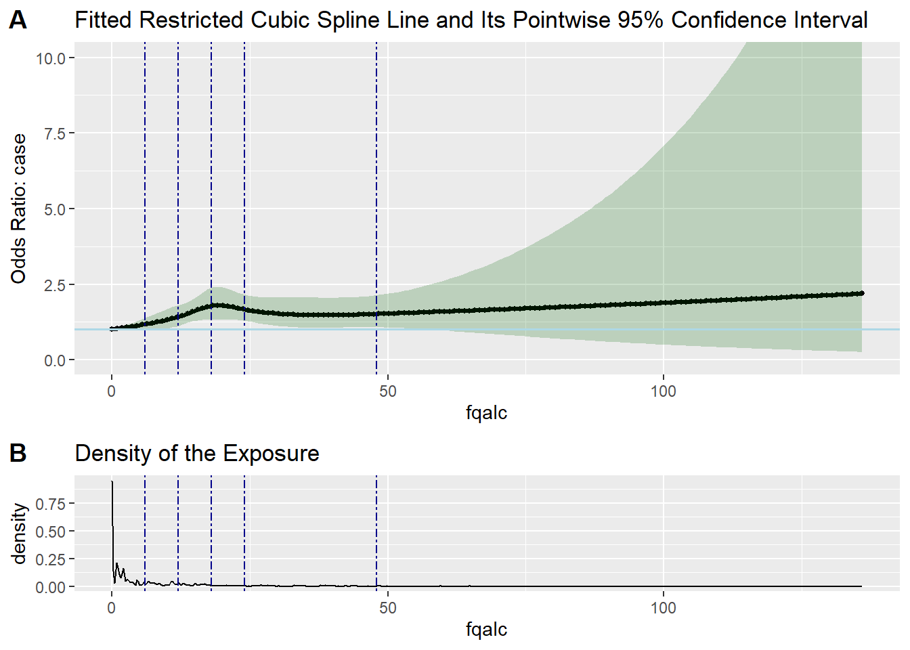
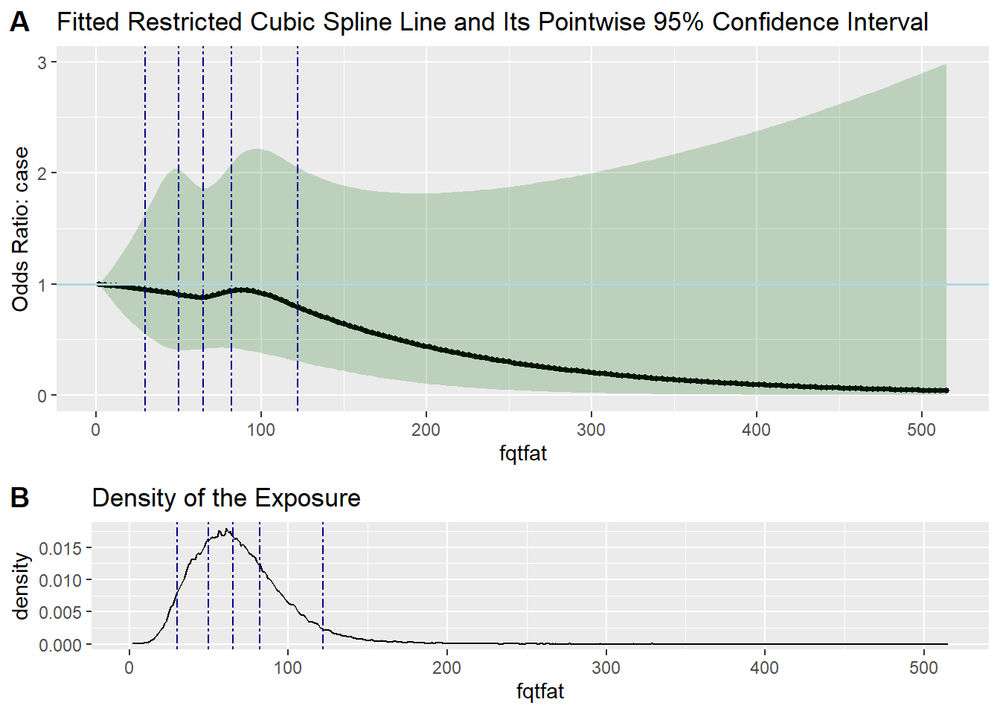
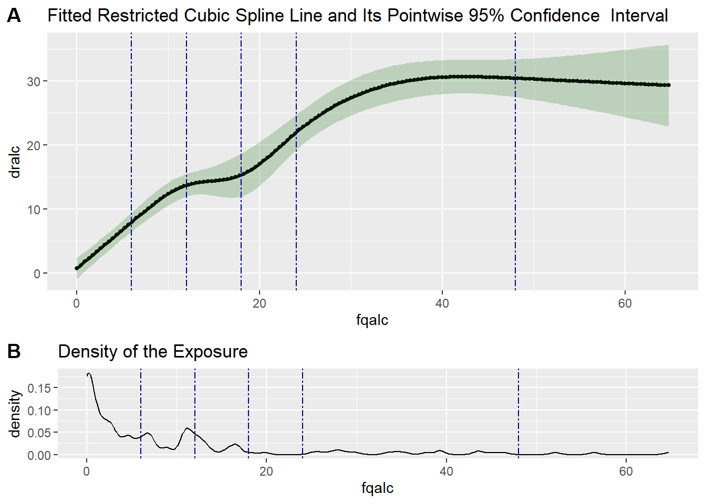

case: Binary outcome variable, if the breast cancer occurred during the four year follow-up
Contained in validation data:
drcal: accurate measure of daily caloric intake in grams
drcalinc: accurate measure of daily caloric intake in 10g
drtfat: accurate measure of daily fat intake in kilo calories
drtfatinc: accurate measure of daily fat intake in 800kcal
dralc: accurate measure of daily alcohol intake in grams
dralcinc: accurate measure of daily alcohol intake in 12g
1.2 Importing Data with External Validation Study
# read in the main study datamain_data<-read.csv("main_data_external.csv",row.names =1)# read in the validation study datavalid_data<-read.csv("valid_data_external.csv",row.names =1)# show the first 5 rows of the datahead(main_data)
# Logistic regression in the MS# fqtfatinc = fqtfat/10, fqcalinc = fqcal/800, fqalcinc=fqalc/12, for having the pre-specified increments in the interpretations of their coefficients in the logistic regression modeluncorrected <-glm(case ~ fqtfatinc + fqcalinc + fqalcinc + agec, data=main_data, family=binomial(link ="logit"))uncorrected_results<-exp(cbind(OR =coef(uncorrected), confint(uncorrected)))
LRT-based chisq df
Test of non-linear cubic spline terms 8.729439 3
Test of overall curvature (i.e. all cubic spline terms) 20.997055 4
Test of linear term only. 12.267616 1
p value
Test of non-linear cubic spline terms 0.0331
Test of overall curvature (i.e. all cubic spline terms) 0.0003
Test of linear term only. 0.0005
test3$fittedCBSplineCurve

Exercise: Testing the Linearity of the Relation Between Total Fat and Breast Cancer in the MS
test_MS <-testLinear(ds = main_data,outcome ="case",var ="fqtfat",#The independent variable being evaluated for linear relationship with `outcome`adj =c("fqcal", "fqalc", "agec"), #Covariates to be adjusted in the modelnknots =5,#Number of knots. (Default=5. The minimum is 3 (i.e. one inner knot two outer knots)method ="glm",family = binomial,link ="logit",densplot =TRUE)test_MS$testOfLinearity
LRT-based chisq df
Test of non-linear cubic spline terms 2.3008700 3
Test of overall curvature (i.e. all cubic spline terms) 2.8430581 4
Test of linear term only. 0.5421881 1
p value
Test of non-linear cubic spline terms 0.5124
Test of overall curvature (i.e. all cubic spline terms) 0.5844
Test of linear term only. 0.4615
test_MS$fittedCBSplineCurve

Exercise: Testing the Linearity of the Relation Between Total Calories and Breast Cancer in MS
LRT-based chisq df
Test of non-linear cubic spline terms 2.3828446484 3
Test of overall curvature (i.e. all cubic spline terms) 2.3830912461 4
Test of linear term only. 0.0002465977 1
p value
Test of non-linear cubic spline terms 0.4968
Test of overall curvature (i.e. all cubic spline terms) 0.6657
Test of linear term only. 0.9875
test2$fittedCBSplineCurve
Assume the measurement error model is linear.
Running code
source("regCalibRSW.R")
rcdf <-regCalibRSW(supplyEstimates =FALSE,ms = main_data,vs = valid_data,sur =c("fqtfatinc","fqcalinc","fqalcinc"), # mismeasured exposures and covaraitesexp =c("drtfatinc","drcalinc","dralcinc"),covCalib =c("agec"),covOutcome =NULL, # Correctly measured risk factors for outcome in the MS# Should not include any variable from `covCalib`outcome ="case",method ="glm", # methods for outcome modelingfamily = binomial, # family parameter being passed to glmlink ="logit", # link function being passed to glmexternal =TRUE, # Indicates whether `vs` is an external validation set.pointEstimates =NA,vcovEstimates =NA)
The measurement error model can be linear or nonlinear
Testing Logistic-linearity of the outcome model and assume the measurement error model is linear.
Running code
# source the function for RC-IMsource("regCalibCRS.R")
echo=FALSE# call regCalibCRSrcim <-regCalibCRS(ms = main_data, #MSvs = valid_data, #VSsur =c("fqtfatinc","fqcalinc","fqalcinc"), #Mismeasured exposures and covaraitesexp =c("drtfatinc","drcalinc","dralcinc"),#Correctly measured exposure and covaraites with one-to-one correspondence to `sur`covCalib =c("agec"),#Error-free covariates to adjust for in calibration model including non-linear terms.covOutcome =c("agec"),#Error-free covariates to adjust for in outcome model including non-linear terms.outcome ="case",method ="glm", #Methods for outcome modelingfamily = binomial, #Family parameter being passed to glmlink ="logit", #Link function being passed to glmexternal =TRUE#Indicates whether `vs` is an external validation set.)
Testing the linearity of the measurement error model
Testing the Linearity of the Measurement Error Model for Alcohol in VS
# Test if the calibration model is lineartest6 <-testLinear(ds = valid_data,outcome ="dralc",var ="fqalc",adj =c("fqtfat", "fqcal", "agec"),nknots =5,knotsvalues =c(6,12,18,24,48),method ="lm",densplot =TRUE)test6$testOfLinearity
LRT-based chisq df
Test of non-linear cubic spline terms 50.01987 3
Test of overall curvature (i.e. all cubic spline terms) 269.19826 4
Test of linear term only. 219.17839 1
p value
Test of non-linear cubic spline terms 0
Test of overall curvature (i.e. all cubic spline terms) 0
Test of linear term only. 0
# Plot splinetest6$fittedCBSplineCurve

Exercise: Testing the Linearity of the Measurement Error Model for Total Calories in VS
# Test if the calibration model is lineartest5 <-testLinear(ds = valid_data,outcome ="drcal",var ="fqcal",adj =c("fqtfat", "fqalc", "agec"),nknots =5,method ="lm",densplot =TRUE)test5$testOfLinearity
LRT-based chisq df
Test of non-linear cubic spline terms 1.728298 3
Test of overall curvature (i.e. all cubic spline terms) 9.480342 4
Test of linear term only. 7.752044 1
p value
Test of non-linear cubic spline terms 0.6307
Test of overall curvature (i.e. all cubic spline terms) 0.0502
Test of linear term only. 0.0054
# Plot splinetest5$fittedCBSplineCurve
Exercise: Linearity of the Measurement Error Model for Total Fat in the VS
# Test if the calibration model is lineartest4 <-testLinear(ds = valid_data,outcome ="drtfat",var ="fqtfat",adj =c("fqcal", "fqalc", "agec"),nknots =5,method ="lm",densplot =TRUE)test4$testOfLinearity
LRT-based chisq df
Test of non-linear cubic spline terms 1.989486 3
Test of overall curvature (i.e. all cubic spline terms) 9.879113 4
Test of linear term only. 7.889627 1
p value
Test of non-linear cubic spline terms 0.5746
Test of overall curvature (i.e. all cubic spline terms) 0.0425
Test of linear term only. 0.0050
# Plot splinetest4$fittedCBSplineCurve
In the VS, we will fit the following non-linear measurement error models:
Violation of Measurement Error Model Linearity Assumption: Sensitivity Analysis using RC-IM
library(Hmisc)# Data preparation - create spline terms for alcoholrcsalcList <-paste0("rcsfqalc.", seq(1,3))# Include spline terms for every 12 g/day increment in alcohol in both MS and VSrcsfqalc.main <-rcspline.eval(main_data$fqalcinc, knots=c(0.5,1,1.5,2,4))colnames(rcsfqalc.main) <- rcsalcListmain1 <-cbind(main_data, rcsfqalc.main) %>%as.data.frame()rcsfqalc <-rcspline.eval(valid_data$fqalcinc, knots=c(0.5,1,1.5,2,4))colnames(rcsfqalc) <- rcsalcListvalid1 <-cbind(valid_data, rcsfqalc) %>%as.data.frame()
rcim_nl <-regCalibCRS(ms = main1, # MSvs = valid1, # VSsur =c("fqtfatinc","fqcalinc","fqalcinc"),exp =c("drtfatinc","drcalinc","dralcinc"),covCalib =c("agec", "rcsfqalc.1", "rcsfqalc.2", "rcsfqalc.3"),# error-free covariates to adjust for in calibration model# spline terms adjusted in the ME models included herecovOutcome =c("agec"),# error-free covariates to adjust for in outcome model# including non-linear terms.outcome ="case",method ="glm", # methods for outcome modelingfamily = binomial, # family parameter being passed to glmlink ="logit", # link function being passed to glmexternal =TRUE# Indicates whether `vs` is an external validation set.)
# Print out results on OR scaleimputed_nl_results<-exp(cbind(OR = rcim_nl$correctedCoefTable[,1],'2.5 %'= rcim_nl$correctedCoefTable[,5],'97.5 %'= rcim_nl$correctedCoefTable[,6]))
Compare results from naive, deattenuation, imputed methods and imputed method with nonlinear measurement error model:
If only total fat intake (fqtfatinc) is subject to measurement error and total calories and alcohol (fqcalinc, fqalcinc) are ac urately measured, how should we modify the code for the two methods? How do the resulting estimates compare with the model in which all three exposures are corrected?
Hint
(1). Calibration model is: drtfatinc~fqtfatinc+fqcalinc+fqalcinc+agec;
(2). Outcome model is: Case~drtfatinc+fqcalinc+fqalcinc+agec.
# put your code here # For Imputation method:rcim_fat <-regCalibCRS(ms = main_data, #MSvs = valid_data, #VSsur =c("fqtfatinc"), #Mismeasured exposures and covaraitesexp =c("drtfatinc"),#Correctly measured exposure and covaraites with one-to-one correspondence to `sur`covCalib =c("fqcalinc","fqalcinc", "agec"),#Error-free covariates to adjust for in calibration model including non-linear terms.covOutcome =c("fqcalinc","fqalcinc", "agec"),#Error-free covariates to adjust for in outcome model including non-linear terms.outcome ="case",method ="glm", #Methods for outcome modelingfamily = binomial, #Family parameter being passed to glmlink ="logit", #Link function being passed to glmexternal =TRUE#Indicates whether `vs` is an external validation set.)
#Deattanuation factor methodrcdf_fat <-regCalibRSW(supplyEstimates =FALSE,ms = main_data,vs = valid_data,sur =c("fqtfatinc"), # mismeasured exposures and covaraitesexp =c("drtfatinc"),covCalib =c("fqcalinc","fqalcinc", "agec"),covOutcome =NULL, # Correctly measured risk factors for outcome in the MS# Should not include any variable from `covCalib`outcome ="case",method ="glm", # methods for outcome modelingfamily = binomial, # family parameter being passed to glmlink ="logit", # link function being passed to glmexternal =TRUE, # Indicates whether `vs` is an external validation set.pointEstimates =NA,vcovEstimates =NA)#Corrected regression coefficients (exponentiated)corrected_RC_DF_fat<-exp(cbind(OR = rcdf_fat$correctedCoefTable[,1],'2.5 %'= rcdf_fat$correctedCoefTable[,5],'97.5 %'= rcdf_fat$correctedCoefTable[,6]))# print resultscorrected_RC_DF_fat
For the above model setting, what if we consider the measurment error model is nonliear with alcohol, how do we revise the code?
rcim_nl_fat <-regCalibCRS(ms = main1, # MSvs = valid1, # VSsur =c("fqtfatinc","fqcalinc","fqalcinc"),exp =c("drtfatinc","drcalinc","dralcinc"),covCalib =c("agec", "rcsfqalc.1", "rcsfqalc.2", "rcsfqalc.3"),# error-free covariates to adjust for in calibration model# spline terms adjusted in the ME models included herecovOutcome =c("agec"),# error-free covariates to adjust for in outcome model# including non-linear terms.outcome ="case",method ="glm", # methods for outcome modelingfamily = binomial, # family parameter being passed to glmlink ="logit", # link function being passed to glmexternal =TRUE# Indicates whether `vs` is an external validation set.)
# Print out results on OR scaleimputed_nl_results<-exp(cbind(OR = rcim_nl$correctedCoefTable[,1],'2.5 %'= rcim_nl$correctedCoefTable[,5],'97.5 %'= rcim_nl$correctedCoefTable[,6]))
2. Reliability Study Available
The R package RegCalReliab addresses measurement error in covariates when either an internal or an external reliability study is available. More details of the usage of the package are here.
3. Other Packages on Regression Calibration
The R package mecor implements regression calibration for linear model with continuous outcomes. More details of the usage of the package can be find here.